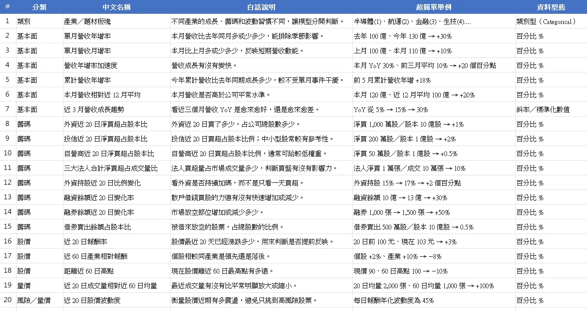
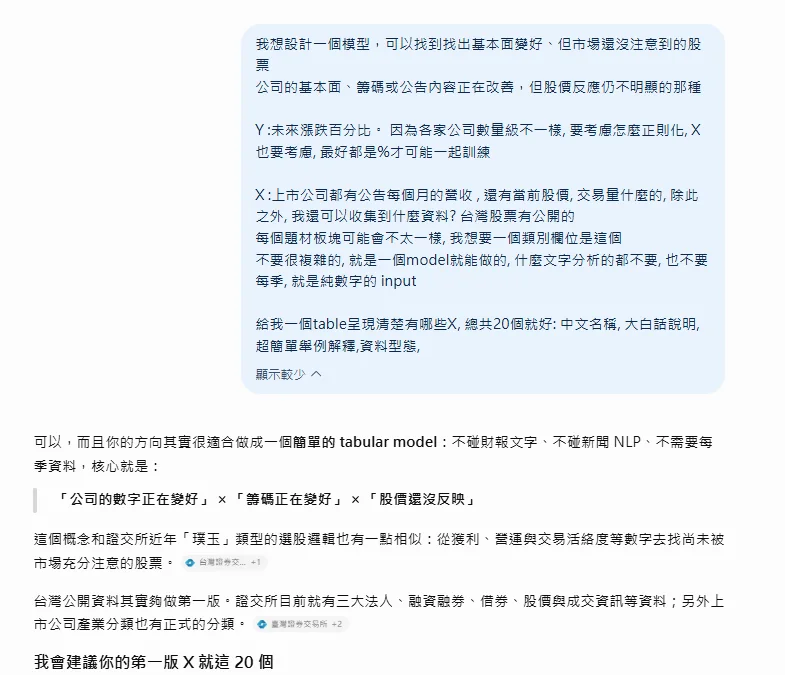
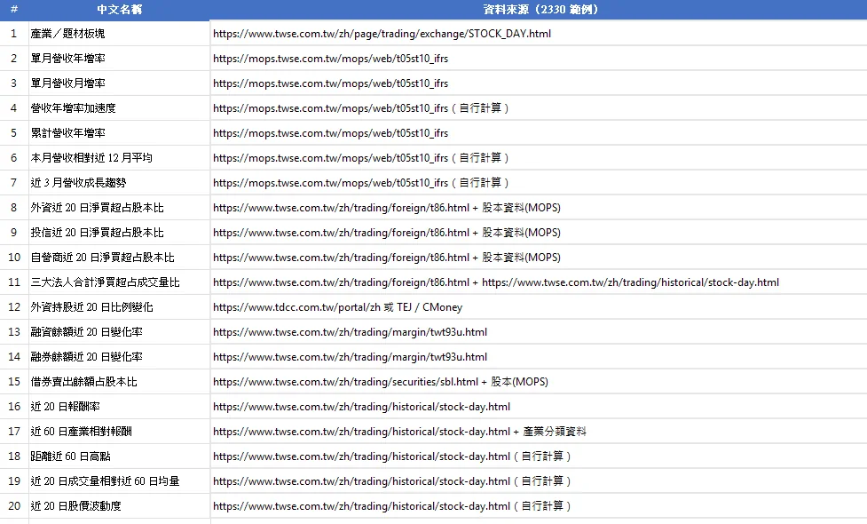
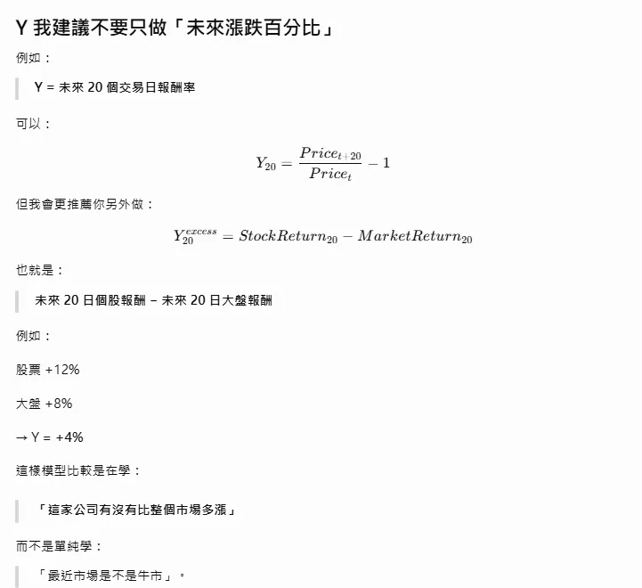
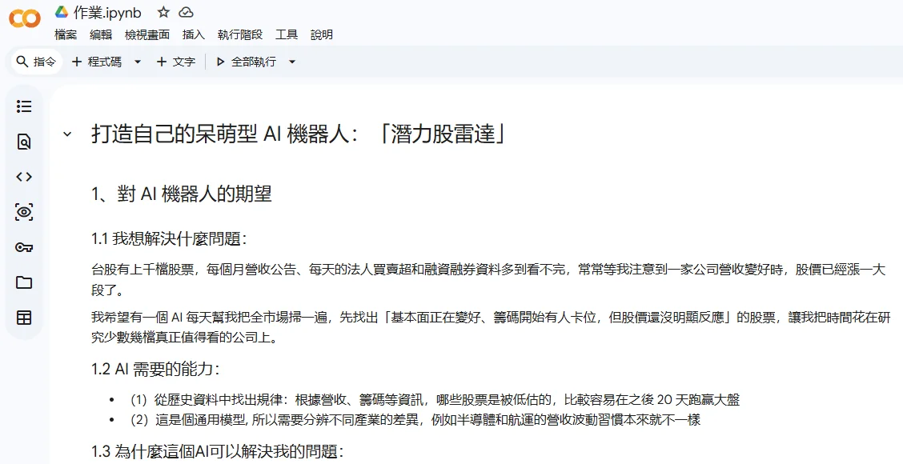
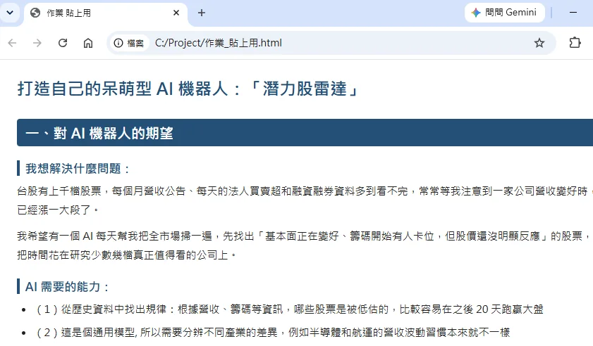

潛力股雷達：設計一個 AI 要看什麼、猜什麼
作業是「打造自己的 AI 機器人」。這次的重點不是寫程式，而是設計：想清楚 AI 每天要吃進哪些資料（輸入），最後要告訴我什麼（輸出）。我和 AI 來回討論了很多次，才把模糊的想法整理成具體的設計。

想解決的問題
台股上千檔，營收、法人買賣、融資融券資料多到看不完，等我注意到一家公司變好時，股價常常已經漲一大段了。
AI 怎麼幫忙
和 ChatGPT 反覆討論該給模型哪些資料、預測什麼，並確認資料都能公開取得；最後請 Claude 幫忙排版。
成果
一份完整的模型設計：每檔股票每天 20 個數字當輸入，預測它未來 20 個交易日會贏或輸大盤多少 %。
01過程
-
先把模糊的想法丟給 AI
我一開始只知道想找「基本面變好、但市場還沒注意到」的股票。我的初步想法是：
- 輸出：未來漲跌的百分比。因為每家公司規模差很多，要用百分比才能放在一起比。
- 輸入：每月營收、股價、成交量……但還不確定台灣有哪些資料是公開的。
於是我把這些想法寫給 ChatGPT，請它列出建議的輸入欄位。

把我的想法寫給 ChatGPT -
AI 給太多了，靠自己挑出 20 個
我問了很多次，每次給的組合都不太一樣；如果不限制，它甚至會建議上百個欄位。最後是我自己挑出覺得合理、又涵蓋不同面向的 20 個：
類別 數量 用來判斷什麼 產業／題材 1 不同產業要分開看，例如半導體和航運的營收波動習慣本來就不一樣 基本面 6 公司是不是真的變好，而且越來越好（營收年增率、月增率、成長趨勢等） 籌碼面 8 是不是有人開始默默買進（外資、投信、自營商、融資融券、借券等） 股價／量價 5 股價是不是還沒反映，以及風險高不高 關鍵設計 台積電和小型股的營收差了好幾個數量級，如果直接放金額，模型只會學到「大公司數字大」。所以我盡量都用成長率、占比、變化率，大小公司才能放在同一個模型比較。 -
確認每個資料都拿得到
我請 AI 以台積電（2330）為例，逐一確認每個欄位的資料來源。結果全部都是免費的公開資料：公開資訊觀測站、證交所、集保結算所。

以 2330 為例的資料來源對照表 -
AI 一再建議：輸出改成「贏大盤多少」
問了很多次，AI 每次都強烈建議不要只預測漲跌，而是預測「個股報酬 − 大盤報酬」。這樣模型學到的是「這家公司有沒有比市場多漲」，而不是「最近是不是牛市」，更符合我想找「還沒被市場發現的個股」的目的。
舉例：20 個交易日後，個股漲 12%、大盤漲 8%，答案就是 +4%。

AI 的建議：預測超額報酬，而不是單純的漲跌 -
連交作業的排版都交給 AI
內容在 Word 寫好後，我先請 Claude 改成 Colab 筆記本，但不太好看。後來我直接把交作業的網頁編輯器截圖給它，問它能給什麼格式讓我直接貼上。結果它生成了 HTML，貼進去之後格式完整保留，只有圖片要自己重新放。

第一版：改成 Colab 筆記本，不太好讀 
第二版：AI 生成 HTML，可以直接貼上
02成果
| 輸入（X） | 某一檔股票在某一天的 20 個數字（全部是數字資料，不分析新聞或財報文字，一個模型就能訓練） |
|---|---|
| 輸出（Y） | 未來 20 個交易日，這檔股票會贏或輸大盤多少 % |
| 資料來源 | 公開資訊觀測站（每月營收、股本）、證交所（成交資訊、三大法人、融資融券、借券、產業分類）、集保結算所（外資持股） |
| 訓練資料量 | 約 1,000 檔上市股票 × 每年約 240–250 個交易日：5 年約 120–125 萬筆，10 年約 240–250 萬筆 |
| 怎麼使用 | 每天把每檔股票最新的 20 個數字丟進模型，就能排出「最可能跑贏大盤」的名單，我只要研究前面幾檔 |
03我的心得
這次作業讓我了解，做 AI 模型最重要的是先把輸入和輸出想清楚。老師也提醒，很多人沒有明確寫出模型要吃什麼資料、最後要預測什麼。我才發現自己一開始的想法太模糊，只是想找「有潛力、還沒漲的股票」。
我也發現，特徵要怎麼選很吃領域知識。沒有 AI 協助，我很難一次想到並整理出基本面、籌碼面、股價面都涵蓋到的 20 個特徵。AI 幫我提供不同方向、確認資料能不能取得，我再照自己的想法挑選和修改。
另一個意外收穫是排版。沒想到 AI 能判斷交作業的網頁可以直接貼 HTML，省下很多時間。AI 不只能協助分析，連完成報告的細節都幫得上忙。
💼 帶回工作用
這一堂可以套用到工作上的地方：
- 想用 AI 預測什麼之前，先寫清楚「輸入」和「輸出」例如想預測產品品質，就要先決定用哪些製程數據當輸入、哪一個品質指標當輸出。這一步想清楚，後面和 AI 或資料團隊溝通都會順很多。
- 數字要能放在一起比規模差很多的東西（大廠和小廠、大客戶和小客戶），用比例、成長率比較，比直接比金額更公平。
- AI 給的選項多，挑選要靠自己的專業AI 很會列清單，但哪些真的有用、哪些不合理，還是要靠熟悉業務的人判斷。
- 排版也可以交給 AI把要貼上的地方（系統編輯器、Email、簡報）截圖給 AI，問它「什麼格式可以直接貼進來」。